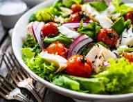

Welcome
Discover simple, healthy meals you can make with the community budget and schedule. From quick breakfasts to nutritious dinners, these recipes are designed to be affordable, easy to prepare, and packed with energy to keep you focused throughout the day. Whether you're living in a dorm or cooking in a shared apartment kitchen, you'll find tips and ideas to eat well without spending a lot of time or money
